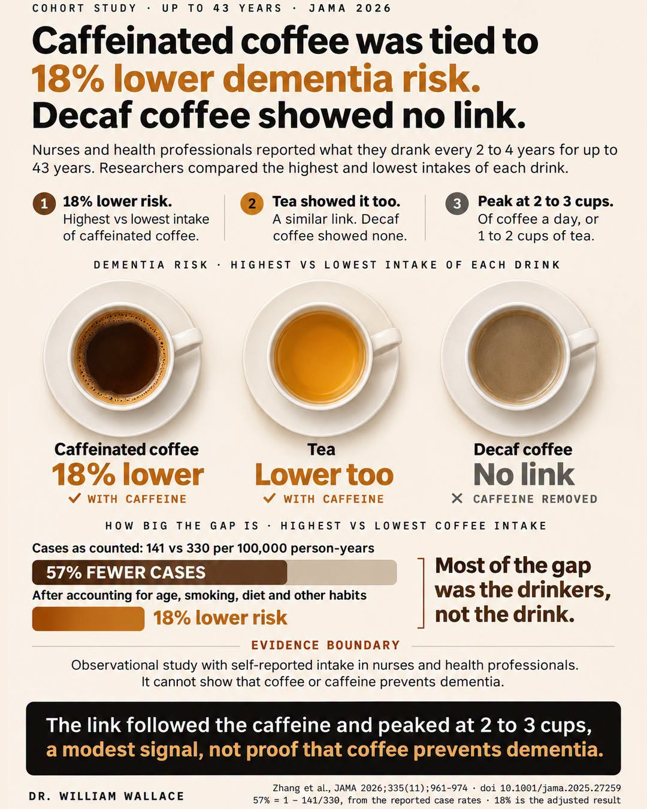

The data in this chart comes from the Harvard Nurses Study and the Harvard Physicians Follow-up Study.
See these previous posts on this study:
#coffeeHD #dementiaHD #alzheimersHD #hnsHD #harvardHD #hpfsHD #teaHD #caffeineHD
Louis shares a chart based on the Harvard Nurses' Health Study and Health Professionals Follow-up Study relating coffee, tea and caffeine to dementia, with links to previous posts. The chart image is not described in the text.
The data in this chart comes from the Harvard Nurses Study and the Harvard Physicians Follow-up Study.
See these previous posts on this study:
#coffeeHD #dementiaHD #alzheimersHD #hnsHD #harvardHD #hpfsHD #teaHD #caffeineHD
Shared summary of the JAMA cohort study following health professionals for an average of 37 years. Moderate caffeinated coffee or tea intake was linked to lower dementia risk and better cognitive performance, with no relationship for decaf.

Louis shares the JAMA prospective cohort study of over 130,000 US adults followed up to 43 years: higher caffeinated coffee and tea intake was associated with lower dementia risk and modestly better cognition, strongest at moderate intake.
Shared JAMA summary of the Harvard Nurses' Health Study and Health Professionals Follow-up Study. Moderate intake of caffeinated coffee or tea was associated with lower dementia risk and modestly better cognition, while decaf showed no benefit.

Shared summary of a JAMA cohort of 131,821 US nurses and health professionals followed up to 43 years. The highest caffeinated coffee group had 18% lower dementia risk after adjustment, decaf showed no link, and the lowest risk was at about 2-3 cups of coffee or 1-2 cups of tea. Observational, with large confounding (heavy drinkers smoked more).

A Washington Post interview with Harvard nutrition researcher Walter Willett. He says his group's data showed total fat was irrelevant, trans fats were bad, saturated fat versus refined carbohydrate was only weakly related to heart disease, and unsaturated fats were linked to lower heart disease and mortality. He also describes his own diet, including oats, nuts, blueberries and a plant-based lunch.

A prospective study of Nurses' Health Study and Health Professionals follow-up participants found six healthy eating patterns were tied to less cognitive decline, with DASH best, and plant-based and Mediterranean patterns also performing well.